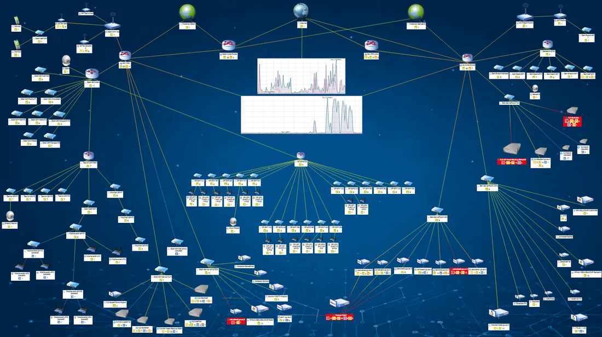

OPEN TO RELOCATION — EUROPEAN UNION · CANADA · NEW ZEALAND
Hamed@portfolio:~$ whoami
Seyed Hamed
Hosseini
Network & Systems Administrator
IT infrastructure professional with 9+ years of hands-on experience supporting university IT services. My work covers network and server administration, Linux systems, VMware virtualization, backup and monitoring. I enjoy troubleshooting complex issues, improving service reliability and continuously learning new technologies.
campus-network — PRTG map

CAPABILITIES
Technical skills
Networking
Cisco Catalyst switching (2960, 3750X and 3850), MikroTik router administration, VLANs, trunking, RSTP, inter-VLAN routing, SSTP and L2TP VPNs, Layer 2 and Layer 3 site-to-site connectivity, firewall rules, SNMP and fiber links.
CiscoMikroTikTCP/IP
Linux & Windows
Debian and Ubuntu server administration, Nginx, Apache, PHP-FPM, MariaDB, systemd, SSH, DNS, DHCP and Windows Server. Python scripts for Zabbix checks and for BigBlueButton, Nextcloud and Moodle tasks, written with AI assistance and tested by me.
UbuntuDebianWindows ServerPython
Virtualization
VMware ESXi 8 and vCenter operations: virtual machine lifecycle, datastores, resource monitoring and host administration.
VMwareESXivCenter
Backup & Recovery
Veeam Backup & Replication v12 across two servers, 20+ jobs, daily incrementals, weekly fulls, retention and restore operations.
VeeamRecoveryVeeam Agent
Monitoring
Zabbix 7 across about 100 hosts and thousands of items, collected through the Zabbix agent and SNMP: servers, Cisco and MikroTik devices, services, TLS certificate expiry dates and fingerprints with a one-week expiry warning, and GPU metrics. SNMP discovery, custom UserParameters, Agent2 plugins, triggers, maps, dashboards and performance tuning. Also PRTG.
ZabbixPRTGSNMPAgent2
Security
Linux hardening, SSH security, Fail2Ban, UFW, iptables, incident response after a compromised web server, and hands-on experiments with Suricata.
HardeningFail2BanSuricata
PRODUCTION
Platforms I operate
M
Moodle 5 & BigBlueButton
Nginx and PHP-FPM 8.4 for Moodle, with BBB and Greenlight v3 in Docker. Scalelite load balancing and cluster sizing explored for large online classes.
MoodleBBBScaleliteDocker
☁
Nextcloud 33
University file-sharing platform: data directory management, maintenance mode, cron, database tuning and security configuration.
NextcloudApacheMariaDB
⌘
Campus network
Cisco switching and MikroTik routing across university sites, including VLAN design, inter-site connectivity and network troubleshooting.
CiscoMikroTikVLAN
◉
Monitoring & backup infrastructure
Zabbix dashboards for network, servers and service health; Veeam backup jobs, retention policies and restore operations.
ZabbixPRTGVeeam
PROBLEM → SOLUTION
Selected work
Nextcloud compromised through a vulnerable app
Problem. CPU and memory hit 100% and Nextcloud went down.
Cause. Apache logs and the file system showed a compromise: malicious files in /tmp and /dev/shm and a malicious crontab entry, brought in through a vulnerable app.
What I did. Removed the malware, the crontab entry and the app, and blocked the IPs the malware used. Tightened firewall rules, reissued certificates and passwords, and moved the server behind ArvanCloud so it only accepts traffic from ArvanCloud’s IP addresses.
ApacheIncident responseHardening
Switching loop traced from MAC flapping
Problem. Switch logs reported MAC flapping and a loop on the network.
Cause. A faulty cable and a user’s device.
What I did. Followed the flapping MAC addresses from switch to switch to the exact port and corrected the cause. Then enabled BPDU Guard and storm control so a repeat is stopped at the port.
CiscoSTPBPDU GuardStorm control
Veeam jobs failing with certificate errors
Problem. On about 20 jobs and 10 TB of data, every job failed with certificate errors, and repositories also ran out of space.
Cause. The servers’ clocks were out of sync.
What I did. Fixed time synchronization with NTP, after which the jobs ran again. Then tuned retention so the repositories stopped filling up.
Veeam v12NTPRetention
Physical Windows server moved to a VM
Problem. A physical Windows server had to be moved to the virtual environment.
What I did. Backed it up with Veeam Agent, restored it with Instant Recovery on ESXi, then took a full backup of the new VM.
Veeam AgentInstant RecoveryESXi
Moodle breaking after a plugin install
Problem. After a plugin install and a cache purge, the site showed web errors and its CSS broke.
What I did. From the CLI, put the site in maintenance mode, removed the plugin, re-ran the upgrade, then took the site out of maintenance mode.
MoodleCLIMaintenance mode
BigBlueButton: media access and attendance
Problem. Users couldn’t use their microphone or webcam in online classes, and instructors needed attendee lists for past sessions.
Cause. The required TCP and UDP ports weren’t open on the network.
What I did. Opened the ports. Wrote a Python script (AI-assisted, tested by me) that runs on the server and extracts each session’s attendee list.
BBBTCP/UDPPython
Automatic MikroTik config backups
Problem. Router configurations needed regular backups without manual work.
What I did. Wrote a RouterOS script that creates the backup automatically and emails it.
MikroTikRouterOSScripting
Zabbix monitoring beyond the default templates
Problem. Standard templates cover the basics, but GPU health, TLS certificates and security events weren’t visible.
What I did. Run Zabbix 7 across about 100 hosts and thousands of items, using both the Zabbix agent and SNMP. Added UserParameters for GPU metrics (from nvidia-smi), built a template that checks TLS certificates through Agent2 web scenarios and macros, tracking each certificate’s expiry date and fingerprint, with a trigger that warns one week before expiry. Also built SNMP discovery for Cisco and MikroTik, plus maps and dashboards.
Zabbix 7SNMPAgent2Certificates
CAREER
Experience & education
SEP 2016 — PRESENT
PROFESSIONAL EXPERIENCE
Network & Systems Administrator
Golestan University
Responsible for university servers, virtualization, networking, monitoring, backup and core IT services. Since 2020, also involved in the infrastructure behind virtual learning and online classes.
2013
EDUCATION
BSc in Computer Science
Golestan University
Final project focused on university network simulation, identifying network problems and exploring practical solutions.
EXPERIMENTS
Home lab
Learning by building
A personal environment for testing ideas before they reach production, with a focus on open-source AI tooling, automation and infrastructure services.
GPURTX 3070 · 3090 · 3060
AI runtimeOllama
InterfaceOpen WebUI
OllamaOpen WebUILocal LLMsn8n automationSupabase Vector DBEmbeddingsRAG
CONNECT
Let’s work together
I’m open to Network & Systems Administrator and IT Infrastructure opportunities across the European Union, Canada and New Zealand. I welcome international opportunities that offer relocation assistance or visa sponsorship.
hamedhosseini7052@yahoo.com ↗